| 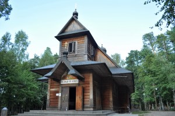 | 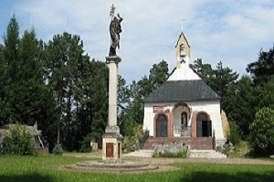 | 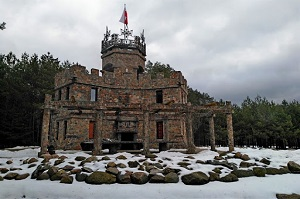 | 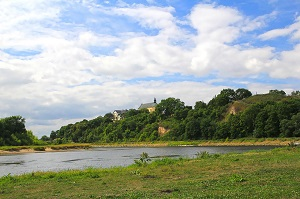 |
| Grabarka | Kalwaria Podlaska w Serpelicach | Kasztelik w Olendrach | Góra zamkowa w Drohiczynie |
| 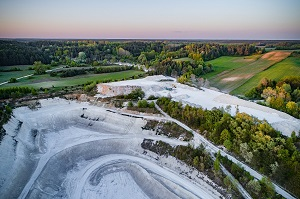 | 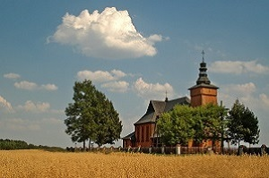 | 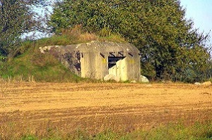 | 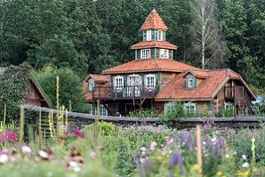 |
| Kopalnia kredy - Mielnik | Kościół w Tokarach | Linia Mołotowa | Ziołowy zakątek |
| 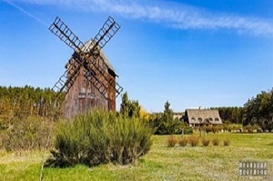 | 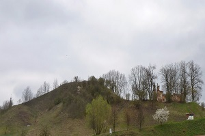 | 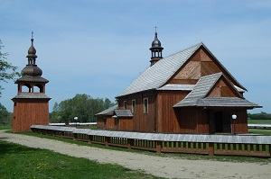 | 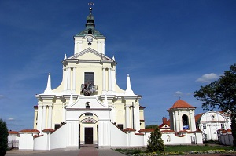 |
| Uroczysko Zaborek | Góra zamkowa w Mielniku | Sanktuarium Męczenników | Kościół pw. Wniebowzięcia NMP |